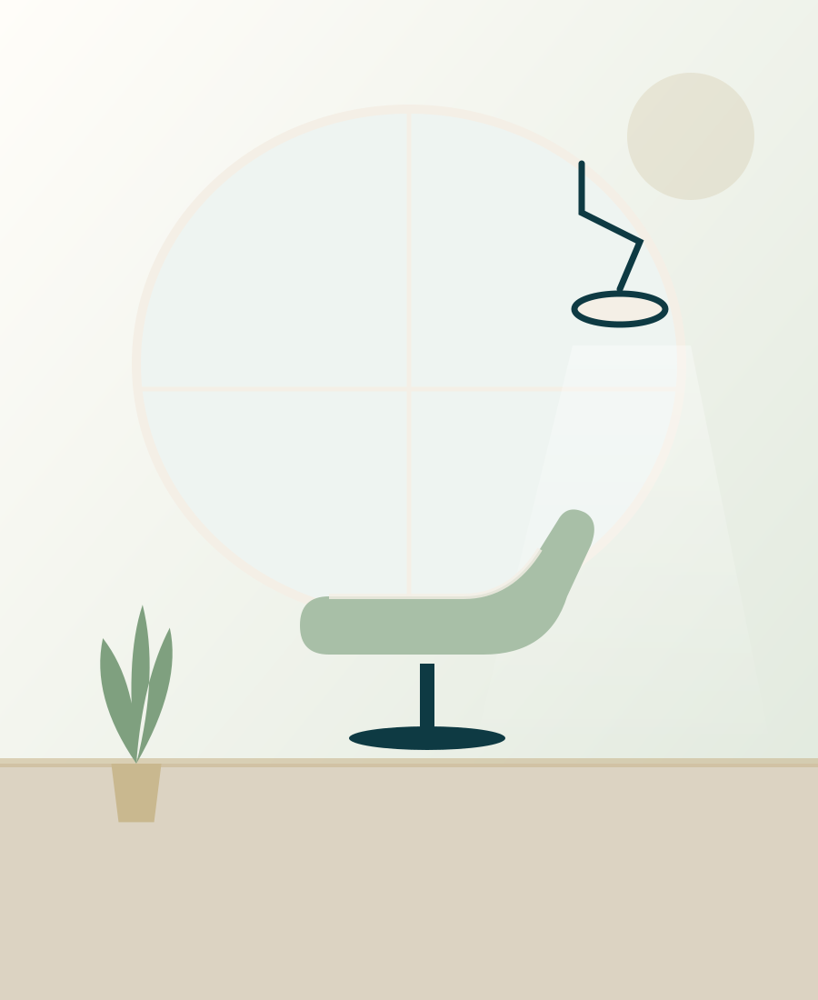
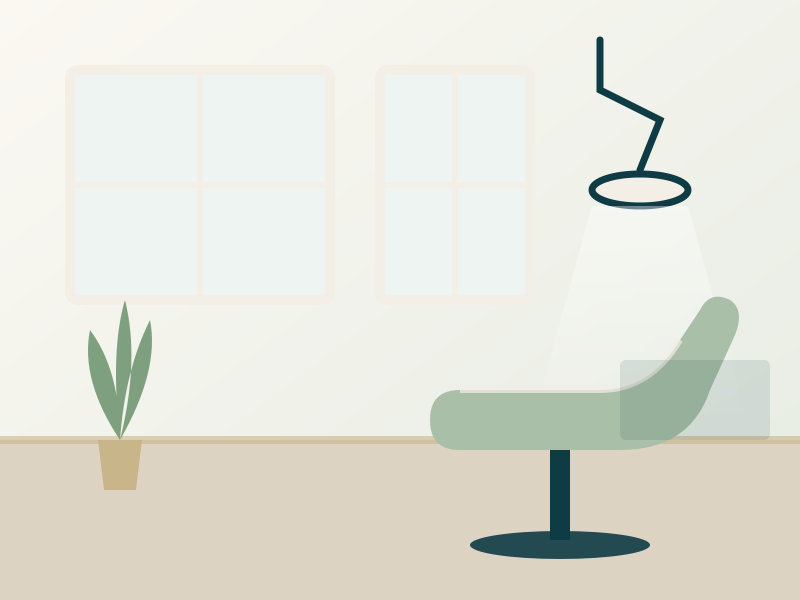
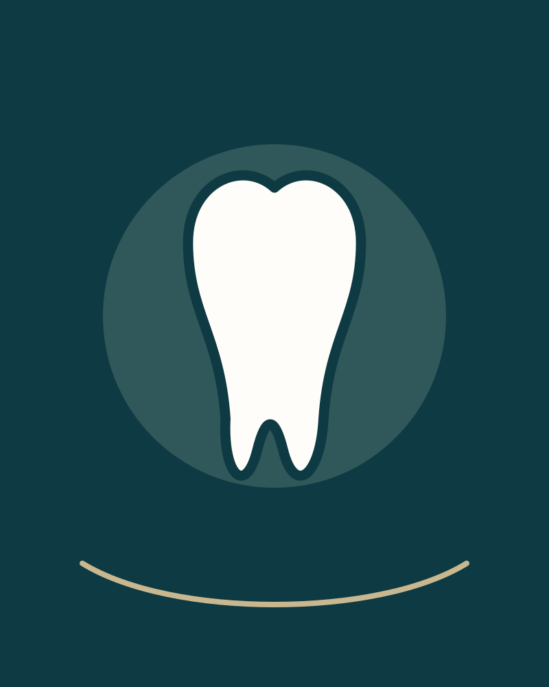

Saúde bucal
Cuidados voltados à saúde e à manutenção da saúde oral.
Saúde bucal, cuidado personalizado e atenção à estética do sorriso, com uma experiência acolhedora em Franca, SP.




Nosso objetivo é oferecer um atendimento odontológico cuidadoso, valorizando a saúde bucal, a funcionalidade e a estética do sorriso.
Um espaço dedicado ao cuidado odontológico, com atenção às necessidades de cada paciente e uma experiência de atendimento acolhedora.
Falar com o consultórioInformações gerais sobre o posicionamento do consultório. Para saber quais procedimentos são oferecidos, fale com a equipe.
Cuidados voltados à saúde e à manutenção da saúde oral.
Atenção à aparência do sorriso, considerando as necessidades e possibilidades de cada paciente.
Cuidados relacionados à função oral e às necessidades odontológicas individuais.
Abordagem voltada à recuperação da função e, quando indicado, da estética dentária.
Valorização das necessidades de cada paciente.
Foco na importância dos cuidados odontológicos.
Atenção à harmonia estética dentro das possibilidades clínicas.
Comunicação clara sobre as opções de cuidado recomendadas.


Imagens ilustrativas. As fotografias reais do consultório entram aqui assim que forem enviadas.
★★★★★
Veja o que pacientes dizem sobre o consultório nas avaliações públicas.
Consultar avaliaçõesEntre em contato para esclarecer suas dúvidas e consultar a disponibilidade de horários.
Agendar pelo WhatsApp(16) 99109-7313
Confirme a disponibilidade diretamente com o consultório.
Pelo WhatsApp (16) 99109-7313. O botão “Agendar pelo WhatsApp” do site já abre a conversa com uma mensagem inicial.
Rua Ifigênia Maria da Oliveira, 3791, Vila Santa Cruz, Franca – SP, CEP 14403-583.
De segunda a sexta, das 9h às 20h; aos sábados, das 10h às 16h. Domingo fechado. Confirme a disponibilidade diretamente com o consultório.
Envie uma mensagem pelo WhatsApp. A equipe informa quais cuidados são oferecidos e o que é indicado para o seu caso.
Pelo WhatsApp, informando o dia e o período de sua preferência. Os horários dependem da agenda do consultório.